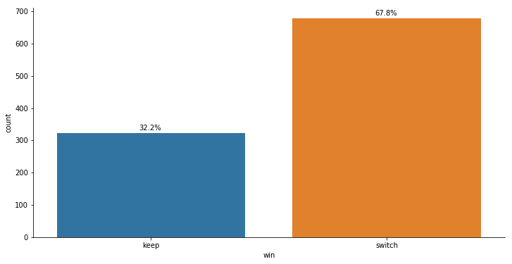

Monty Hall Problem¶
[280]:
import numpy as np
import pandas as pd
nTrials = 1000
[281]:
prizes = [np.append(np.random.permutation(prizes),[1,1]) for prizes in np.tile(['goat', 'goat', 'car'], (nTrials,1))]
prizes = [np.append(r,np.where(r=='car')[0]+1) for r in prizes]
prizes = [np.append(r,np.random.choice(list(set(np.where(r=='goat')[0]+1)-{1}))) for r in prizes]
prizes = [np.append(r,list({'2','3'}-{r[-1]})[0]) for r in prizes]
[282]:
df = pd.DataFrame(prizes, columns=['door1','door2','door3','select', 'keep', 'prize', 'open','switch'])
df.head()
[282]:
| door1 | door2 | door3 | select | keep | prize | open | switch | |
|---|---|---|---|---|---|---|---|---|
| 0 | car | goat | goat | 1 | 1 | 1 | 3 | 2 |
| 1 | goat | goat | car | 1 | 1 | 3 | 2 | 3 |
| 2 | goat | goat | car | 1 | 1 | 3 | 2 | 3 |
| 3 | goat | goat | car | 1 | 1 | 3 | 2 | 3 |
| 4 | goat | car | goat | 1 | 1 | 2 | 3 | 2 |
[283]:
df['win'] = 'NA'
df.win[df.prize==df.keep] = 'keep'
df.win[df.prize==df.switch] = 'switch'
df.head()
[283]:
| door1 | door2 | door3 | select | keep | prize | open | switch | win | |
|---|---|---|---|---|---|---|---|---|---|
| 0 | car | goat | goat | 1 | 1 | 1 | 3 | 2 | keep |
| 1 | goat | goat | car | 1 | 1 | 3 | 2 | 3 | switch |
| 2 | goat | goat | car | 1 | 1 | 3 | 2 | 3 | switch |
| 3 | goat | goat | car | 1 | 1 | 3 | 2 | 3 | switch |
| 4 | goat | car | goat | 1 | 1 | 2 | 3 | 2 | switch |
[284]:
import seaborn as sns
import matplotlib.pyplot as plt
fig, axes = plt.subplots(1, 1, figsize = (12,6))
ax = sns.countplot(x='win', data=df, order=df['win'].value_counts().sort_values().index, ax=axes)
total = len(df.win)
nbars = len(ax.patches)
for p in ax.patches:
percentage = '{:.1f}%'.format(100 * p.get_height()/total)
x = p.get_x() + p.get_width()/2 -.05
y = p.get_y() + p.get_height() + total/100
ax.annotate(percentage, (x, y))
ax.spines['right'].set_visible(False)
ax.spines['top'].set_visible(False)
plt.show()
